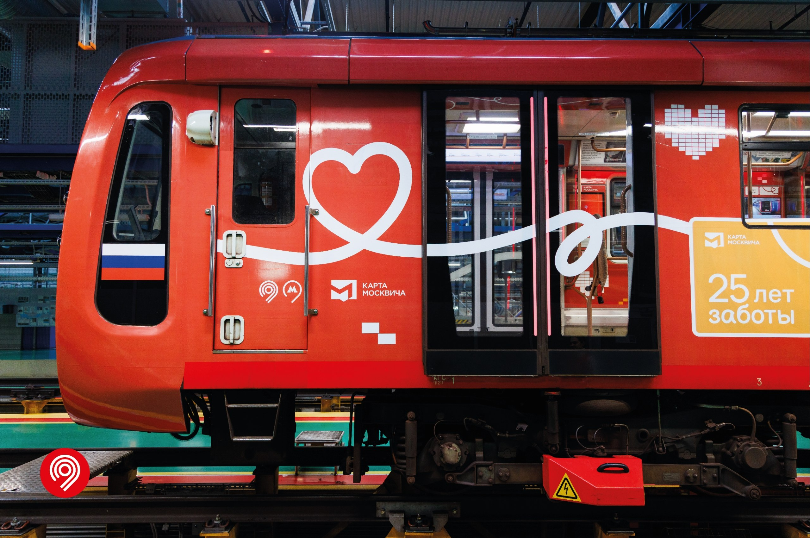
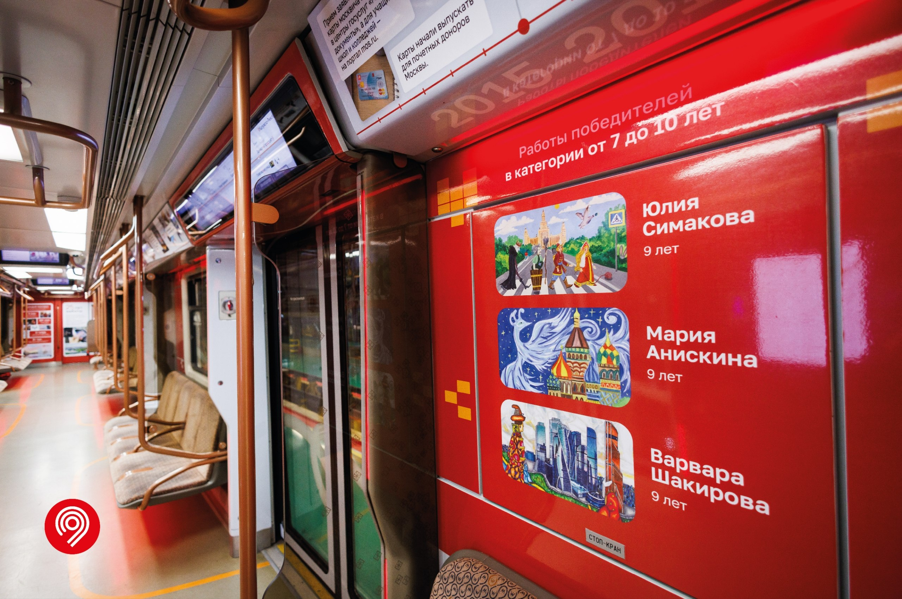

81-775 «Москва-2020» №75013-75014
Восьмивагонный электропоезд модели 81-775 «Москва-2020» с головным вагоном 75014 (и 75013). Относится к новейшему поколению поездов «Москва», которые пришли на смену «Окам» и «Номерным».
С 2 ноября 2026 года состав эксплуатируется в тематическом оформлении «Карте Москвича — 25 лет!», посвящённом юбилею социальной карты.
Общая информация
| Параметр | Значение |
|---|---|
| Город | Москва 🇷🇺 |
| Депо/Парк | ТЧ-5 «Калужское» |
| Модель | 81-775 / 81-776 / 81-777 «Москва-2020» |
| Построен | 08.2020 |
| Начало работы | 24.11.2023 |
| Текущее состояние | Эксплуатируется |
| Назначение | Пассажирский |
| Текущее брендирование | «Карте Москвича — 25 лет!» (с 02.11.2026) |
Составность
75013 — 77013 — 76025 — 76026 — 76027 — 76028 — 77014 — 75014
8 вагонов
История
Поступление в метрополитен
Состав поступил через гейт ТЧ-2 «Сокол».
Поступление в депо
Состав поступил в ТЧ-16 «Митино» для презентации.
Накатка пробега
Временное хранение и накатка пробега в ТЧ-18 «Солнцево».
Приписка
Поступил в депо приписки ТЧ-10 «Свиблово».
Передача в ТЧ-5
Поступил в депо приписки ТЧ-5 «Калужское».
Тематическое оформление «Карте Москвича — 25 лет!»
Состав получил новое оформление, посвящённое 25-летию социальной карты москвича.
О тематическом поезде
Встречайте тематический поезд в честь 25-летия карты москвича!
Пассажиры поезда смогут:
- 🔹 Изучить историю карты и её развития.
- 🔹 Увидеть, кто стоит за этим масштабным проектом и как производят карту сегодня.
- 🔹 Познакомиться с её возможностями.
- 🔹 Узнать неожиданные факты: какие фамилии чаще всего встречаются среди держателей карт и что общего между первым впечатлением о незнакомом человеке и упаковкой карты москвича.
В каждом вагоне также можно проследить, как за последние 25 лет менялись Москва и повседневные привычки её жителей.
Слово от Дептранса
«Под руководством Мэра Москвы Сергея Собянина Москва стала мировым лидером по количеству способов оплаты проезда. Одна из наших главных задач — сделать каждую поездку максимально комфортной для всех пассажиров, в том числе для людей с правом льготного или бесплатного проезда. Совместно с коллегами из столичного Департамента информационных технологий реализовали несколько удобных сервисов для владельцев карт москвича. Например, пассажиры совершили уже более 7,5 млн проходов в городской транспорт по биометрии с привязанной картой москвича. А чтобы отслеживать историю поездок и покупать билеты в пару кликов, можно привязать карту в приложении "Метро Москвы". Теперь запустили новый тематический поезд, где жители столицы смогут познакомиться с историей развития карты и её возможностями», — рассказал Максим Ликсутов.
Фотогалерея

Головной вагон №75014 с тематическим оформлением «Карте Москвича — 25 лет!».

Боковая проекция головного вагона №75014 с тематическим оформлением «Карте Москвича — 25 лет!».

Внутреннее оформление тематического вагона.
Нажмите на фото для увеличения
«"Москва-2020" — это не просто поезд. Это целая эпоха комфорта. А "Карта Москвича" на его боках напоминает о том, что метро — это в первую очередь для людей».